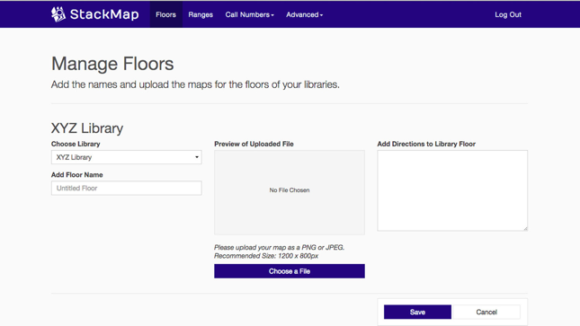

StackMap creates an indoor mapping software for library media. The software requires library data to be digitised. I focused on making the task of digitising data as easy as possible. I created prototypes in HTML and CSS.
1st Outcome
Process
I documented and analysed the workflows of new and returning users of the software. From there I tried to change various functionality and design issues.
Below is a demonstration of a first-time user testing the original version of StackMap.
I tackled the homepage first. It contained an accordion with instructions. I replaced the screenshots with images that aided the textual content and hinted at the functionalities of the software. I played around with different versions of the icon for the logo. I cut out the letters SM from the centre of the magnifying glass. It occurred to me, that the letters were illegible at such small size. It was not clear that the symbols represent a magnifying glass and a book.
During a user testing one frustrated participant mentioned he did not like using the old version of StackMap. He said, he was the only one who was able to use it and it took him several hours to complete his tasks. I thought it would be good to facilitate the option of sharing the workload. An activity tracker would provide an overview of what tasks have been done.
Below is a prototype in HTML5, CSS3 and JavaScript of the aforementioned changes.

The first step to digitise library data is uploading the floor plans containing the media to be mapped. The redesign of this step was restricted by technical limitations and had to retain its basic structure. A lot of the people I had test the interface forgot to save the changes they made before they left the page.
At first, I suggested placing the save button in a more prominent position. That did not show much improvement, so I suggested having save buttons at the top and bottom of the page. Fixing the button to the browser window so it is always visible, was the most suitable option. It would have been best if it only appears, once the software registers a user has made a change on the site.
I added a cancel button so the users would have the option of switching pages without encountering a browser alert. Testing showed the more a user encountered an alert, the more desensitised they became towards them. Below is a prototype of the page. It shows the three different stages a user encounters when they upload a file.
The panel containing all the options for placing ranges proved to be overwhelming for most people. To make it easier for the users we disabled options that were only available in certain situations, e.g. changing the appearance of a range is only possible once the user has created and selected a range. I changed the order of the options depending on their usage and importance. I also added a range key: Some people were confused by the appearance of the ranges. Below is another prototype It only demonstrates the visual redesign, none of the aforementioned functionalities.
2nd Outcome
Process
To challenge myself I created a redesign of the site without the technical limitations imposed during the first redesign.
To begin, I split the site into two parts:
1. Onboarding for new users
2. A dashboard displaying relevant information, linked to all functions for returning users
The onboarding guides the user through all steps and explains all features. I thought it was necessary to distinguish between first-time and experienced users. The tasks to digitise library data are complex and the target audience is unlikely to be familiar with the features when first introduced to the software. After they have been introduced to all the features, they can use a simplified form of the software and complete their tasks more efficiently.
My first couple of iterations for the map upload flow were a little off. One of my mentors advised me to stop thinking visually and strip down the flow to the most essential steps and write them out in a diagram. This helped me clarify which steps would come first and which were most important.
After encountering the welcome page, the first step a new user must make is upload the floorplans of their library.
The drag and drop box has to be most prominent. It needs to draw attention to the most important part of the this page: Uploading files to create a library floor.
I was advised to think about every possible scenario that could happen during the upload process and come up with ways to deal with problems that could arise.
Initially, I thought of having the editing windows for each library on the same page in a minimised format. It was then drawn to my attention, that future users will spend up to an hour editing a library. It would be better to have the editing window be full-screen. I was not able to get enough data on what kind of information librarians would find useful so I was not sure which features to add to the dashboard. Generally, I think it would be good if the users had an overview of recent updates and access to an FAQ page.
Below you can interact with the final version of this project. I was not able to create a high quality prototype of all that I sketched. Due to my limited skills at the time I decided to focus on one aspect, the onboarding and do that as best as I possibly could.
Overall I this internships was the catalyst for getting me to learn to code in HTML5 and CSS3. By following the guidelines for writing CSS3 set in Jacob’s Medium article. I learned how to structure my code logically. I think it was good practice for future projects where multiple people are editing the code.
View the rest of the outcomes on Codepen.